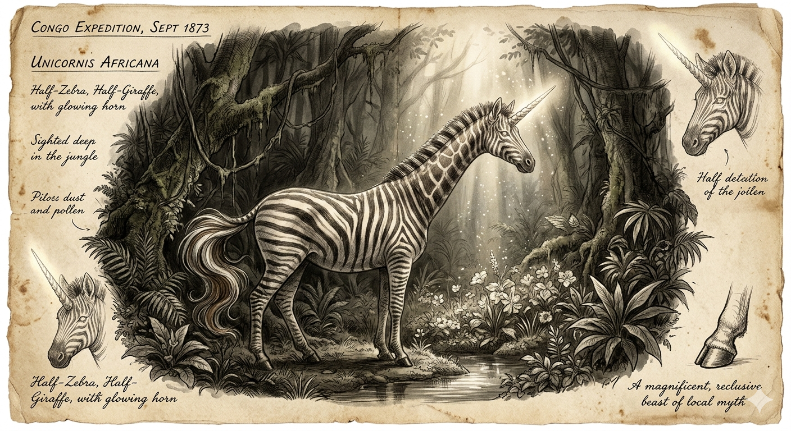

האוקאפי
מהחד-קרן האפריקאי לשריד האחרון של קרובי הג'ירפה
מחקר אטימולוגי: מקור השמות
השם המדעי הטקסונומי: Okapia johnstoni
השם המדעי הוא שילוב מרתק בין השפה המקומית העתיקה של ילידי יערות קונגו לבין הוקרה לחוקר הבריטי שהוכיח את קיומו למדע:
- Okapia: נגזר מהשם המקומי O'api בשפת שבט הפיגמים (Mbuti) החיים ביער איטורי. מבחינתם, החיה מעולם לא הייתה מיתוס, אלא חלק מהמציאות היומיומית של היער.
- johnstoni: תוספת של שם המין הניתנת כמחווה לסר הארי ג'ונסטון (Sir Harry Johnston, 1858–1927), המושל הבריטי של אוגנדה, שהיה המדען הראשון שהשיג עור וגולגולת שלמים של החיה והביא אותם לאירופה.
התגלית המדעית שזעזעה את אירופה
בסוף המאה ה-19, החוקר המפורסם הנרי מורטון סטנלי (1841–1904) שמע מילידים על חיה דמוית-חמור יוצאת דופן שמסתתרת בעומק הג'ונגל של קונגו, אזור חשוך וסבוך שכמעט ולא נחקר. המדענים באירופה פטרו זאת כעוד אגדת פולקלור על "חד-קרן אפריקאי".
התפנית הגיעה בשנת 1901. סר הארי ג'ונסטון, חוקר אובססיבי של חידות זואולוגיות, הצליח לחלץ קבוצה של ילידי פיגמים מידי חוטפים. כאות תודה, הם הובילו אותו אל היער והראו לו עקבות של החיה. למרות שג'ונסטון מעולם לא ראה אוקאפי חי במו עיניו, הוא הצליח לרכוש מהמקומיים חלקי עור, ובסופו של דבר גולגולת שלמה ועור מלא. כאשר אלו נשלחו ללונדון והוצגו לחברה הזואולוגית, הקהילה המדעית נדהמה: החיה האגדית הייתה אמיתית לחלוטין.
המיתוס מול המציאות הזואולוגית
האגדה ("חצי זברה, חצי סוס"): בשל הפסים הבולטים על רגליו האחוריות, החוקרים הראשונים שראו רק חלקי עור היו משוכנעים שמדובר במין חדש של זברה החיה ביער, או אולי בשריד פרהיסטורי של סוס בר שניצל מהכחדה.
המציאות (קרוב המשפחה של הג'ירפה): ברגע שהגולגולת נבדקה, האמת התבררה כמרתקת אף יותר – האוקאפי אינו קשור כלל לזברות או לסוסים. הוא למעשה השריד החי היחיד שנותר במשפחת הג'ירפיים, מלבד הג'ירפה עצמה!
מאפיינים ביולוגיים מרתקים
- לשון ארוכה ולופתת: לאוקאפי לשון כחולה-סגולה באורך של כ-35 ס"מ. היא כל כך ארוכה שהוא יכול לנקות איתה את עיניו ואוזניו! הלשון משמשת לתלישת עלים מענפים סבוכים.
- תפקיד פסי ה"זברה": הפסים הלבנים על רגליו האחוריות משמשים כהסוואה מושלמת (הם מדמים את משחקי האור והצל של השמש המסננת דרך צמרות היער), אך הם גם משמשים כמעין "סימני עקוב אחריי" ויזואליים לעופרים העוקבים אחר אימם ביער החשוך.
- קרני הג'ירפה (אוסִיקוֹנִים): בדומה לג'ירפות, לזכרי האוקאפי יש שתי קרניים קצרות מכוסות עור על ראשם (נקראות Ossicones). לנקבות אין קרניים כלל, אלא רק בליטות שיער קטנות.
תיעוד חזותי (לחץ להגדלה)

המיתוס: "זברת יער" או "חד-קרן"

המציאות: קרוב המשפחה של הג'ירפה